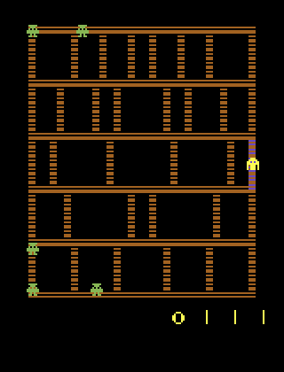
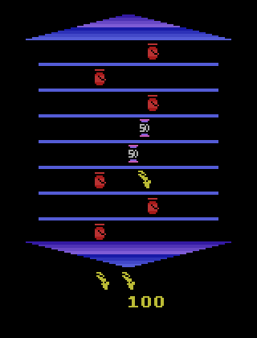
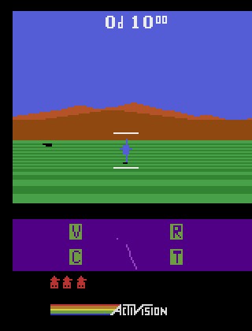
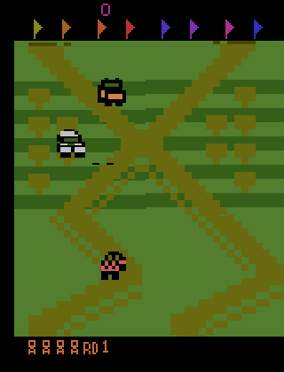
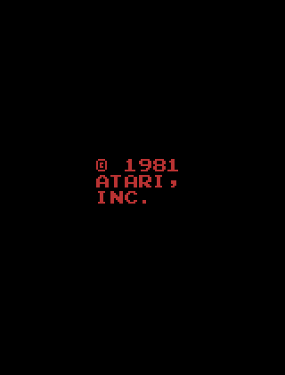
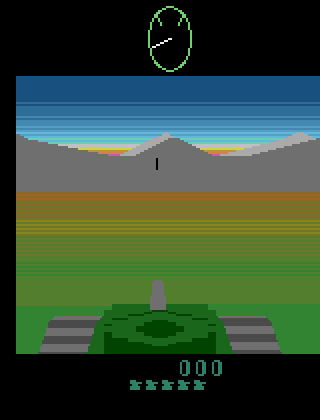
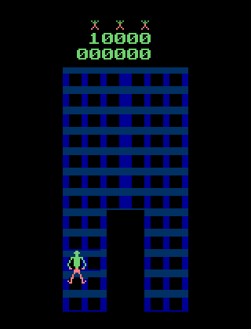
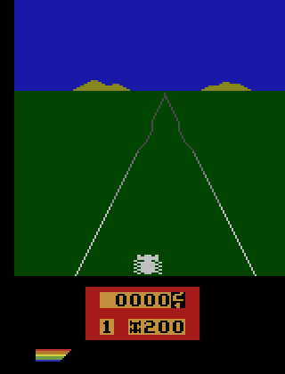
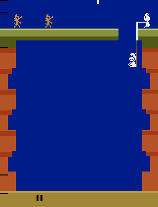

Per-game ground truth
All 64 bit-exact ROMs (54 carry a T3 label, 10 are T1/T2 only), ordered by how much ground truth the shared analysis frame supports (position-regime games first). Screenshots are the actual analysis frame the ground truth is computed on. Colour: green = available, amber = present but limited at this frame, red = not available. The 10 games with no external label carry exact T1/T2 ground truth but are held out of the label-dependent (T3) study.
Of the 54 labelled ROMs, 42 make up the scored battery; the other 12 are excluded (dimmed and tagged below). We exclude a game for one of two honest reasons. Eight fail the cause-density gate: at the shared frame the chosen output has almost no true causes, so there is nothing for a method to be right or wrong about. Four have no sprite that moves under intervention — their verified labels are static things like a score counter, so there is no position for a position method to recover; three games fail both tests. Running interpretability methods on such a frame cannot measure faithfulness — it would only add noise to the leaderboard — so we leave those games out of scoring while keeping their exact T1/T2 ground truth on record. Every game in the scored battery, by contrast, both passes the gate and carries a moving sprite, so it contributes to the all-regime and the position regime alike.
Air Raid OCAtariscored
- Faithfulness (F): 14 true causes at the analysis frame — scorable
- T3: 9 of 13 imported labels verified causally · 8 move a sprite
- Position regime: yes — e.g.
b1.xy - Per-game results → every XAI method's faithfulness on this ROM
Alien OCAtariscored
- Faithfulness (F): 6 true causes at the analysis frame — scorable
- T3: 3 of 6 imported labels verified causally · 3 move a sprite
- Position regime: yes — e.g.
player.xy - Per-game results → every XAI method's faithfulness on this ROM
Assault OCAtariscored
- Faithfulness (F): 16 true causes at the analysis frame — scorable
- T3: 14 of 20 imported labels verified causally · 6 move a sprite
- Position regime: yes — e.g.
enemy_x_part_1 - Per-game results → every XAI method's faithfulness on this ROM
Atlantis OCAtariscored
- Faithfulness (F): 12 true causes at the analysis frame — scorable
- T3: 3 of 9 imported labels verified causally · 3 move a sprite
- Position regime: yes
- Per-game results → every XAI method's faithfulness on this ROM
Bank Heist OCAtariscored
- Faithfulness (F): 8 true causes at the analysis frame — scorable
- T3: 3 of 5 imported labels verified causally · 3 move a sprite
- Position regime: yes — e.g.
player.xy - Per-game results → every XAI method's faithfulness on this ROM
Beam Rider OCAtariscored
- Faithfulness (F): 4 true causes at the analysis frame — scorable
- T3: 2 of 5 imported labels verified causally · 1 move a sprite
- Position regime: yes — e.g.
player.xy - Per-game results → every XAI method's faithfulness on this ROM

Berzerk AtariARI + OCAtariscored
- Faithfulness (F): 23 true causes at the analysis frame — scorable
- T3: 13 of 26 imported labels verified causally · 7 move a sprite
- Position regime: yes — e.g.
enemy_robots_x[0] - Per-game results → every XAI method's faithfulness on this ROM
Bowling AtariARI + OCAtariscored
- Faithfulness (F): 14 true causes at the analysis frame — scorable
- T3: 8 of 20 imported labels verified causally · 7 move a sprite
- Position regime: yes — e.g.
ball_x - Per-game results → every XAI method's faithfulness on this ROM
Boxing AtariARI + OCAtariscored
- Faithfulness (F): 13 true causes at the analysis frame — scorable
- T3: 8 of 11 imported labels verified causally · 5 move a sprite
- Position regime: yes — e.g.
enemy_x - Per-game results → every XAI method's faithfulness on this ROM
Breakout AtariARI + OCAtariscored
- Faithfulness (F): 11 true causes at the analysis frame — scorable
- T3: 7 of 9 imported labels verified causally · 3 move a sprite
- Position regime: yes — e.g.
player_x - Per-game results → every XAI method's faithfulness on this ROM
Carnival OCAtariscored
- Faithfulness (F): 26 true causes at the analysis frame — scorable
- T3: 17 of 18 imported labels verified causally · 12 move a sprite
- Position regime: yes — e.g.
missile.xy - Per-game results → every XAI method's faithfulness on this ROM
Centipede OCAtariscored
- Faithfulness (F): 14 true causes at the analysis frame — scorable
- T3: 8 of 9 imported labels verified causally · 7 move a sprite
- Position regime: yes — e.g.
player.xy - Per-game results → every XAI method's faithfulness on this ROM
Chopper Command OCAtariscored
- Faithfulness (F): 16 true causes at the analysis frame — scorable
- T3: 13 of 20 imported labels verified causally · 9 move a sprite
- Position regime: yes — e.g.
player.xy - Per-game results → every XAI method's faithfulness on this ROM
Demon Attack AtariARI + OCAtariscored
- Faithfulness (F): 18 true causes at the analysis frame — scorable
- T3: 11 of 15 imported labels verified causally · 10 move a sprite
- Position regime: yes — e.g.
enemy_projectile_y - Per-game results → every XAI method's faithfulness on this ROM
Double Dunk OCAtariscored
- Faithfulness (F): 22 true causes at the analysis frame — scorable
- T3: 10 of 12 imported labels verified causally · 8 move a sprite
- Position regime: yes
- Per-game results → every XAI method's faithfulness on this ROM
Fishing Derby OCAtariscored
- Faithfulness (F): 8 true causes at the analysis frame — scorable
- T3: 7 of 9 imported labels verified causally · 5 move a sprite
- Position regime: yes — e.g.
p1s.hook_position - Per-game results → every XAI method's faithfulness on this ROM
Freeway AtariARI + OCAtariscored
- Faithfulness (F): 26 true causes at the analysis frame — scorable
- T3: 14 of 14 imported labels verified causally · 7 move a sprite
- Position regime: yes — e.g.
c2.xy - Per-game results → every XAI method's faithfulness on this ROM
Frostbite AtariARI + OCAtariscored
- Faithfulness (F): 23 true causes at the analysis frame — scorable
- T3: 12 of 19 imported labels verified causally · 9 move a sprite
- Position regime: yes — e.g.
fourth_row_iceflow_x - Per-game results → every XAI method's faithfulness on this ROM
Gopher OCAtariscored
- Faithfulness (F): 21 true causes at the analysis frame — scorable
- T3: 14 of 20 imported labels verified causally · 14 move a sprite
- Position regime: yes — e.g.
gopher.xy - Per-game results → every XAI method's faithfulness on this ROM
Hero AtariARI + OCAtariscored
- Faithfulness (F): 17 true causes at the analysis frame — scorable
- T3: 11 of 17 imported labels verified causally · 8 move a sprite
- Position regime: yes — e.g.
destructible_wall.xy - Per-game results → every XAI method's faithfulness on this ROM
Ice Hockey OCAtariscored
- Faithfulness (F): 17 true causes at the analysis frame — scorable
- T3: 10 of 10 imported labels verified causally · 10 move a sprite
- Position regime: yes — e.g.
ball.xy - Per-game results → every XAI method's faithfulness on this ROM
Jamesbond OCAtariscored
- Faithfulness (F): 13 true causes at the analysis frame — scorable
- T3: 5 of 13 imported labels verified causally · 4 move a sprite
- Position regime: yes
- Per-game results → every XAI method's faithfulness on this ROM
Kangaroo OCAtariscored
- Faithfulness (F): 16 true causes at the analysis frame — scorable
- T3: 9 of 15 imported labels verified causally · 5 move a sprite
- Position regime: yes — e.g.
child.xy - Per-game results → every XAI method's faithfulness on this ROM
Krull OCAtariscored
- Faithfulness (F): 17 true causes at the analysis frame — scorable
- T3: 11 of 25 imported labels verified causally · 5 move a sprite
- Position regime: yes — e.g.
player.xy - Per-game results → every XAI method's faithfulness on this ROM
Kung-Fu Master OCAtariscored
- Faithfulness (F): 11 true causes at the analysis frame — scorable
- T3: 5 of 9 imported labels verified causally · 5 move a sprite
- Position regime: yes
- Per-game results → every XAI method's faithfulness on this ROM
Montezuma's Revenge AtariARI + OCAtariscored
- Faithfulness (F): 22 true causes at the analysis frame — scorable
- T3: 15 of 15 imported labels verified causally · 9 move a sprite
- Position regime: yes — e.g.
enemy_skull_x - Per-game results → every XAI method's faithfulness on this ROM
Ms. Pac-Man AtariARI + OCAtariscored
- Faithfulness (F): 24 true causes at the analysis frame — scorable
- T3: 15 of 19 imported labels verified causally · 2 move a sprite
- Position regime: yes
- Per-game results → every XAI method's faithfulness on this ROM
Name This Game OCAtariscored
- Faithfulness (F): 7 true causes at the analysis frame — scorable
- T3: 4 of 5 imported labels verified causally · 4 move a sprite
- Position regime: yes
- Per-game results → every XAI method's faithfulness on this ROM
Pacman OCAtariscored
- Faithfulness (F): 9 true causes at the analysis frame — scorable
- T3: 8 of 8 imported labels verified causally · 5 move a sprite
- Position regime: yes — e.g.
player.xy - Per-game results → every XAI method's faithfulness on this ROM
Phoenix OCAtariscored
- Faithfulness (F): 12 true causes at the analysis frame — scorable
- T3: 8 of 12 imported labels verified causally · 5 move a sprite
- Position regime: yes
- Per-game results → every XAI method's faithfulness on this ROM
Pitfall AtariARI + OCAtariscored
- Faithfulness (F): 19 true causes at the analysis frame — scorable
- T3: 10 of 16 imported labels verified causally · 7 move a sprite
- Position regime: yes — e.g.
enemy_logs_x - Per-game results → every XAI method's faithfulness on this ROM
Pong AtariARI + OCAtariscored
- Faithfulness (F): 6 true causes at the analysis frame — scorable
- T3: 6 of 8 imported labels verified causally · 4 move a sprite
- Position regime: yes — e.g.
ball_x - Per-game results → every XAI method's faithfulness on this ROM
Private Eye AtariARI + OCAtariscored
- Faithfulness (F): 20 true causes at the analysis frame — scorable
- T3: 12 of 24 imported labels verified causally · 9 move a sprite
- Position regime: yes — e.g.
car.xy - Per-game results → every XAI method's faithfulness on this ROM
Q*bert AtariARI + OCAtariscored
- Faithfulness (F): 13 true causes at the analysis frame — scorable
- T3: 6 of 20 imported labels verified causally · 1 move a sprite
- Position regime: yes — e.g.
player_y - Per-game results → every XAI method's faithfulness on this ROM
Riverraid AtariARI + OCAtariscored
- Faithfulness (F): 33 true causes at the analysis frame — scorable
- T3: 15 of 22 imported labels verified causally · 12 move a sprite
- Position regime: yes — e.g.
player_x - Per-game results → every XAI method's faithfulness on this ROM
Road Runner OCAtariscored
- Faithfulness (F): 11 true causes at the analysis frame — scorable
- T3: 7 of 18 imported labels verified causally · 6 move a sprite
- Position regime: yes — e.g.
enemy.xy - Per-game results → every XAI method's faithfulness on this ROM
Seaquest AtariARI + OCAtariscored
- Faithfulness (F): 19 true causes at the analysis frame — scorable
- T3: 11 of 23 imported labels verified causally · 9 move a sprite
- Position regime: yes — e.g.
diver_or_enemy_missile_x - Per-game results → every XAI method's faithfulness on this ROM
Space Invaders AtariARI + OCAtariscored
- Faithfulness (F): 18 true causes at the analysis frame — scorable
- T3: 8 of 17 imported labels verified causally · 7 move a sprite
- Position regime: yes — e.g.
enemies_x - Per-game results → every XAI method's faithfulness on this ROM
Tennis AtariARI + OCAtariscored
- Faithfulness (F): 19 true causes at the analysis frame — scorable
- T3: 11 of 15 imported labels verified causally · 11 move a sprite
- Position regime: yes — e.g.
ball_x - Per-game results → every XAI method's faithfulness on this ROM
Venture AtariARI + OCAtariscored
- Faithfulness (F): 29 true causes at the analysis frame — scorable
- T3: 16 of 18 imported labels verified causally · 8 move a sprite
- Position regime: yes — e.g.
player_x - Per-game results → every XAI method's faithfulness on this ROM
Video Pinball AtariARI + OCAtariscored
- Faithfulness (F): 11 true causes at the analysis frame — scorable
- T3: 7 of 7 imported labels verified causally · 7 move a sprite
- Position regime: yes — e.g.
ball_x - Per-game results → every XAI method's faithfulness on this ROM
Yars' Revenge AtariARI + OCAtariscored
- Faithfulness (F): 11 true causes at the analysis frame — scorable
- T3: 4 of 13 imported labels verified causally · 3 move a sprite
- Position regime: yes
- Per-game results → every XAI method's faithfulness on this ROM

Amidar OCAtariexcluded
- Faithfulness (F): 6 true causes at the analysis frame — scorable
- T3: 0 of 0 imported labels verified causally · 0 move a sprite
- Position regime: no moving tracked sprite at this frame
- Excluded from the scored battery: no moving sprite

Asterix OCAtariexcluded
- Faithfulness (F): 12 true causes at the analysis frame — scorable
- T3: 0 of 9 imported labels verified causally · 0 move a sprite
- Position regime: no moving tracked sprite at this frame
- Excluded from the scored battery: no moving sprite

Robotank OCAtariexcluded
- Faithfulness (F): 5 true causes at the analysis frame — scorable
- T3: 0 of 0 imported labels verified causally · 0 move a sprite
- Position regime: no moving tracked sprite at this frame
- Excluded from the scored battery: no moving sprite

Up'n Down OCAtariexcluded
- Faithfulness (F): 7 true causes at the analysis frame — scorable
- T3: 0 of 0 imported labels verified causally · 0 move a sprite
- Position regime: no moving tracked sprite at this frame
- Excluded from the scored battery: no moving sprite

Asteroids AtariARI + OCAtariexcluded
- Faithfulness (F): too few strong causes at this frame — held out of scoring
- T3: 0 of 47 imported labels verified causally · 0 move a sprite
- Position regime: no moving tracked sprite at this frame
- Excluded from the scored battery: gate-rejected+no moving sprite

Battle Zone OCAtariexcluded
- Faithfulness (F): too few strong causes at this frame — held out of scoring
- T3: 1 of 6 imported labels verified causally · 0 move a sprite
- Position regime: no moving tracked sprite at this frame
- Excluded from the scored battery: gate-rejected+no moving sprite

Crazy Climber OCAtariexcluded
- Faithfulness (F): too few strong causes at this frame — held out of scoring
- T3: 2 of 9 imported labels verified causally · 2 move a sprite
- Position regime: no moving tracked sprite at this frame
- Excluded from the scored battery: gate-rejected

Enduro OCAtariexcluded
- Faithfulness (F): too few strong causes at this frame — held out of scoring
- T3: 2 of 3 imported labels verified causally · 2 move a sprite
- Position regime: no moving tracked sprite at this frame
- Excluded from the scored battery: gate-rejected

Pooyan OCAtariexcluded
- Faithfulness (F): too few strong causes at this frame — held out of scoring
- T3: 4 of 11 imported labels verified causally · 2 move a sprite
- Position regime: no moving tracked sprite at this frame
- Excluded from the scored battery: gate-rejected
Skiing OCAtariexcluded
- Faithfulness (F): too few strong causes at this frame — held out of scoring
- T3: 8 of 9 imported labels verified causally · 4 move a sprite
- Position regime: no moving tracked sprite at this frame
- Excluded from the scored battery: gate-rejected
Star Gunner OCAtariexcluded
- Faithfulness (F): too few strong causes at this frame — held out of scoring
- T3: 0 of 7 imported labels verified causally · 0 move a sprite
- Position regime: no moving tracked sprite at this frame
- Excluded from the scored battery: gate-rejected+no moving sprite
Time Pilot OCAtariexcluded
- Faithfulness (F): too few strong causes at this frame — held out of scoring
- T3: 2 of 5 imported labels verified causally · 1 move a sprite
- Position regime: no moving tracked sprite at this frame
- Excluded from the scored battery: gate-rejected
Defender no external label
- Faithfulness (F): not in the shared testbed
- T3: none — bit-exact T1/T2 only (no external label source)
Elevator Action no external label
- Faithfulness (F): not in the shared testbed
- T3: none — bit-exact T1/T2 only (no external label source)
Gravitar no external label
- Faithfulness (F): not in the shared testbed
- T3: none — bit-exact T1/T2 only (no external label source)
Journey Escape no external label
- Faithfulness (F): not in the shared testbed
- T3: none — bit-exact T1/T2 only (no external label source)
Solaris no external label
- Faithfulness (F): not in the shared testbed
- T3: none — bit-exact T1/T2 only (no external label source)
Surround no external label
- Faithfulness (F): not in the shared testbed
- T3: none — bit-exact T1/T2 only (no external label source)
Tutankham no external label
- Faithfulness (F): not in the shared testbed
- T3: none — bit-exact T1/T2 only (no external label source)
Videochess no external label
- Faithfulness (F): not in the shared testbed
- T3: none — bit-exact T1/T2 only (no external label source)
Wizard Of Wor no external label
- Faithfulness (F): not in the shared testbed
- T3: none — bit-exact T1/T2 only (no external label source)
Zaxxon no external label
- Faithfulness (F): not in the shared testbed
- T3: none — bit-exact T1/T2 only (no external label source)